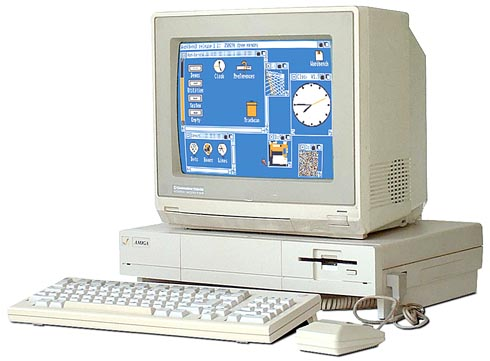
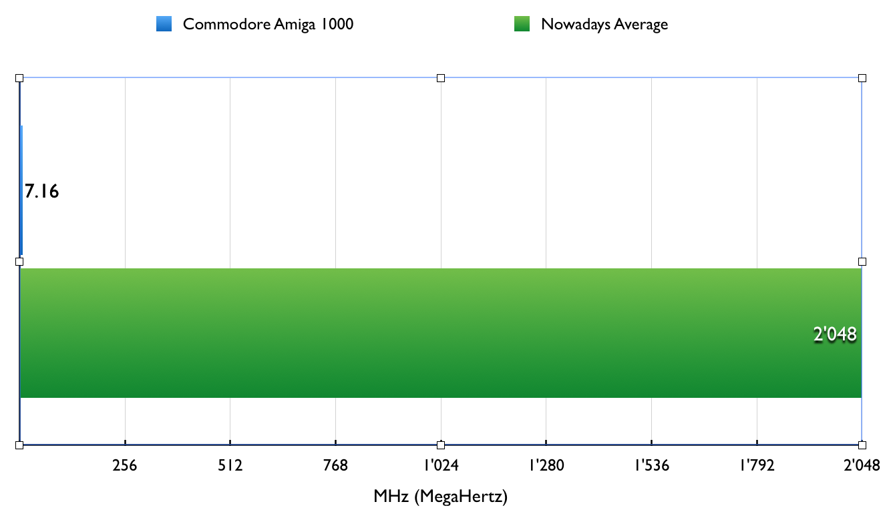

The Commodore Amiga 1000
Commodore Amiga 1000
The Commodore Amiga 1000 a.k.a. Lorraine was the first Commodore International computer of the family.The presentation day of this model of Amiga was 23 July 1985 in New York: Commodore presented it with one of the most famous pop stars of the 80s: Andy Warhol.
It was commercialized from 1985 to 1987 and it's well-known because it was the first personal computer using a preempting multitasking,
a coloured Graphic User Interface "WIMP" (a user-friendly GUI) and a 2 buttons Mouse.
Coloured screen
The Amiga 1000 was near to be the first computer capable of coloured screen: The Atari 520SRT was the first capable of that, but the Amiga still had better quality images.
Cheapest
Since that time, Personal Computers had the problem of the price: The Amiga 1000 was one of the cheapest: 1.295,00$ was the launch price.CPU
The Amiga 1000's CPU was one of the most powerful for that time: a Motorola 68000 (available in the 16-bit version or the 32-bit version) which had the power up to 7.16 MHz: Referred to nowadays computers, it was almost 300 times powerless.
RAM
The RAM installed into the Amiga 1000 was 256 KiB or 512 KiB, 8.000 times powerless then nowadays. I'm not including this graph for obvious motivations.
External Links
- [visited on 1/11/2014] Comparation graph about the Amiga 1000 and some different models of different brands.
- [visited on 1/11/2014] Wikipedia - Amiga 1000
{kind=link}